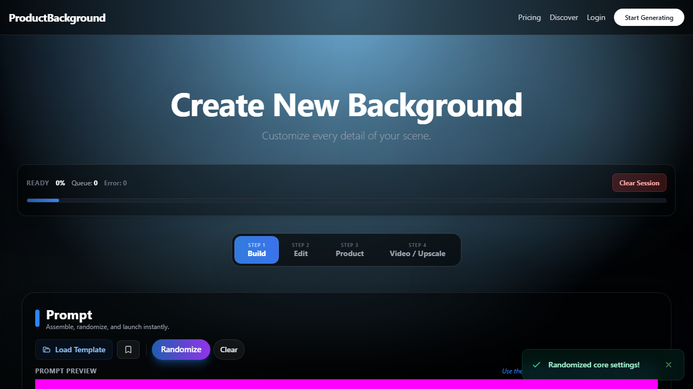

01 Prework
Public model APIs came before the product.
Before building ProductBackground, I published and iterated on image-generation, image-to-image, enhancement, and upscaling models through Replicate. That work made model packaging, input and output contracts, runtime constraints, and remote inference tangible—and became technical prework for the more controlled end-to-end product.
02 Problem
Professional product imagery is a chain, not a magic button.
Commercial results require more than background removal. Scene intent, perspective, lighting, product fidelity, resolution, storage, and delivery all have to work together. Existing consumer tools often hide that chain while professional workflows spread it across several applications.
03 System
One web product coordinating a modular image pipeline.
ProductBackground combines a guided web workflow with private asset storage and remote GPU processing. Users can assemble a scene, refine the result, add the product, and continue into video or high-resolution upscaling without losing the project context.
- 01Workflow before spectacleThe interface exposes a stable sequence — Build, Edit, Product, Video / Upscale — instead of presenting disconnected generation features.
- 02Resolution remains part of the productThe pipeline supports commercial upscaling up to 96MP, so the output can move beyond social-media previews.
- 03Private assets by defaultOwned source images use private storage and signed access while GPU processing remains ephemeral.
04 Role
End-to-end ownership across product, interface, code, and AI workflows.
I shaped the product logic, designed the interface, built the full-stack application, developed and integrated ComfyUI pipelines, connected storage and compute infrastructure, and worked through the operational edge cases of a real service. The project is the clearest expression of how I connect disciplines around one user outcome.
05 Evidence
A substantial working platform, not a disconnected prototype.
The current system includes project persistence, templates, private storage, authentication, payments, GPU job handling, diagnostics, and a multi-stage creation interface. Development remains active; the portfolio deliberately describes the product without presenting unfinished launch work as completed.
